| No |
画像 |
URL |
名称 |
Message |
| 1 | 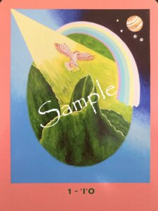 | 🔗 開く | ‘I‘O イオ | 目の前の出来事に、すぐ答えが見つからないことがあるかもしれません。 けれど、今は「分からないこと」を急いで埋める時ではありません。 人生には、あとから振り返ったときに初めて意味がつながる出来事があります。 イオは、高い空から広い景色を見渡します。近くの出来事だけではなく、その奥にある本質へ目を向けるよう静かに教えてくれています。 結果を急ぐよりも、今できることを丁寧に積み重ねてみてください。 あなたの歩みは、見えないところでも確かに育まれています。 今日という一日は、未来を心配する日ではなく、自分自身の成長を信頼する日にしてみましょう。 |
| 2A | 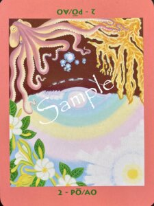 | 🔗 開く | PO ポー | 暗闇は、何もない場所ではありません。 まだ形になっていない可能性が、静かに息づいている場所です。 繰り返される出来事や、なぜか心に引っ掛かる感情には、大切な気づきが隠れていることがあります。 今まで見ないようにしてきた自分も、否定する必要はありません。 その一つひとつが、あなたという存在を形づくってきた大切な一部です。 無理に答えを出そうとせず、静かに心へ問いかけてみてください。 暗闇に光が差し込むように、本来のあなたらしさが少しずつ姿を現していくでしょう。 |
| 2B | 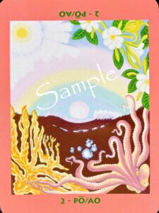 | 🔗 開く | AO アオ | 光は、新しいものだけを照らすわけではありません。 いつもそこにあったものの価値を教えてくれることもあります。 何気ない日常、当たり前に感じていた人とのつながり、自分が積み重ねてきた努力。 その一つひとつに、今まで気づかなかった温かさが宿っています。 最近気になることや、小さな違和感も大切なサインです。 立ち止まり、静かに見つめ直してみることで、新しい視点が生まれるでしょう。 感謝は、未来を大きく変える特別な行動ではなく、今ここにある豊かさに気づくことから始まります。 |
| 3 | 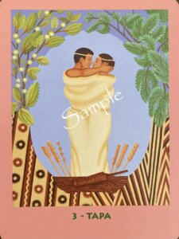 | 🔗 開く | TAPA タパ | 人とのご縁は、人生を豊かにしてくれる大切な贈りものです。 だからこそ、お互いが自分らしくいられる距離も大切になります。 支え合うことと、頼りきることは少し違います。 感謝を伝えることと、自分を犠牲にすることも違います。 心地よい関係は、小さな思いやりや礼儀の積み重ねから育っていきます。 あなた自身を大切にしながら、相手も大切にする。 その優しい循環が、これからのご縁をさらに温かなものへと育ててくれるでしょう。 |
| 4 | | 🔗 開く | MANA マナ | 本当の力は、無理を重ねた先ではなく、心が喜ぶ積み重ねの中で育っていきます。 あなたが夢中になれること、自然と時間を忘れてしまうこと。 そこには、あなたらしいマナが流れています。 誰かと比べる必要はありません。 今日できる小さな一歩を楽しみながら続けることが、やがて大きな力になります。 あなたが満たされることで、その温かさは自然と周りへも広がっていきます。 まずは、自分自身の心が喜ぶ時間を大切にしてみてください。 |
| 5A | 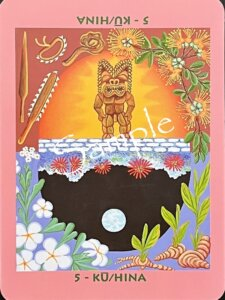 | 🔗 開く | KU クー | 変化の前には、少しだけ勇気が必要になることがあります。 慣れ親しんだ場所を離れることや、自分の本当の気持ちを伝えることは、決して簡単ではありません。 けれど、今あなたの前にある課題は、乗り越えるためではなく、新しい自分に出会うために訪れています。 クーは、力で押し切ることではなく、自分の意志を誠実に表す勇気を教えてくれます。 誰かを責めるのではなく、「私はこう感じています」と素直に伝えることから始めてみましょう。 殻を破った先には、これまで見えなかった景色が待っています。 |
| 5B | 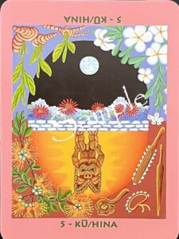 | 🔗 開く | HINA ヒナ | 前へ進みたい気持ちが強いほど、「立ち止まること」に迷いを感じることがあります。 けれど、休息は後退ではありません。 心と身体を整える時間は、本来の力を取り戻すための大切な時間です。 ヒナは、満ちていく月のように、静かな時間の中で力が育まれることを教えてくれています。 今日は少し肩の力を抜き、好きな景色を眺めたり、ゆっくり呼吸をしたり、自分をいたわる時間をつくってみてください。 整った心は、必要なときに自然と前へ進む力を生み出してくれるでしょう。 |
| 6 | 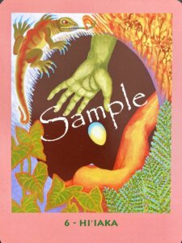 | 🔗 開く | HI‘IAKA ヒイアカ | 誰かのために尽くすことは、とても尊いことです。 けれど、その優しさが我慢や自己犠牲になってしまうと、心は少しずつ疲れてしまいます。 ヒイアカは、「本心からの献身」と「無理を重ねる献身」は違うことを教えてくれています。 あなたが心から大切にしたいと思えることへ力を注ぐとき、その想いは自然と周りにも伝わっていきます。 「こうしなければならない」ではなく、「こうしたい」という気持ちを大切にしてください。 その素直な想いが、未来を少しずつ動かしていくでしょう。 |
| 7 | 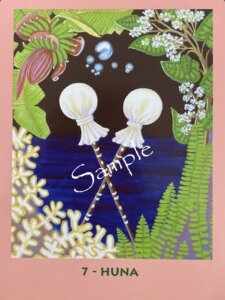 | 🔗 開く | HUNA フナ | 「きっと無理だ」と思っていることの中には、まだ試していないだけのものがあるかもしれません。 私たちは、経験や思い込みの中で、自分でも気づかない制限をつくってしまうことがあります。 フナは、その制限を優しく見つめ直すよう語りかけています。 本当にそうなのでしょうか。 別の見方はできないでしょうか。 一つの答えにこだわらず、少しだけ視野を広げてみることで、新しい可能性が見えてきます。 未来は、思い込みを手放した先で静かに広がっていくでしょう。 |
| 8A | 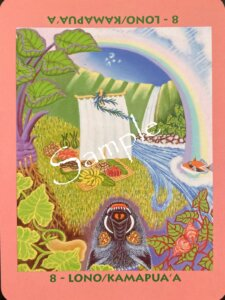 | 🔗 開く | LONO ロノ | あなたがこれまで積み重ねてきたことは、決して無駄ではありませんでした。 目に見えない努力も、小さな挑戦も、すべてが今日という実りにつながっています。 ロノは、「受け取ること」も大切な才能だと教えてくれます。 成果が訪れたなら、遠慮せずに喜び、感謝とともに受け取ってください。 その喜びは、次の成長への力となります。 今日は次の目標を急ぐよりも、ここまで歩んできた自分を静かにねぎらってあげましょう。 感謝の心が、新しい実りへの扉を開いてくれます。 |
| 8B | | 🔗 開く | KAMAPUA‘A カマプアア | 人生には、一歩踏み出す勇気が必要なときと、静かに見守ることが最善となるときがあります。 どちらが正しいのではなく、その時々にふさわしい選択があります。 カマプアアは、型にはまらない発想と、実りを守る慎重さの両方を持っています。 勢いだけで進むのではなく、恐れだけで立ち止まるのでもありません。 今の状況を落ち着いて見つめ、「今、本当に必要なのは前進か、それとも準備か」と自分に問いかけてみてください。 その答えは、あなたの内側が静かに教えてくれるはずです。 |
| 9A | 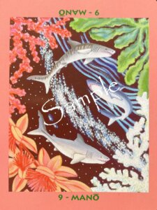 | 🔗 開く | MANO マノ 赤珊瑚が上 | 自信とは、最初から失敗しないことではありません。一歩踏み出し、経験を重ねながら、自分らしい歩み方を見つけていくことです。今日の小さな決断が、明日のあなたを育てます。結果だけではなく、その挑戦そのものを大切にしてください。経験は、あなたの中に揺るぎない自信という宝物を育ててくれるでしょう。 |
| 9B | 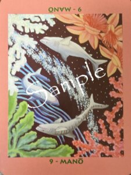 | 🔗 開く | MANO マノ 白珊瑚が上 | 心の奥にある不安や恐れは、あなたを守ろうとしてきた大切な感情です。だからこそ否定するのではなく、やさしく受け止め、少しずつ手放していきましょう。あなたが自分自身を認め始めると、見える景色も変わっていきます。安心して、自分らしい未来へ舵を切ってください。 |
| 10 | 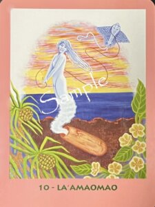 | 🔗 開く | LA‘AMAOMAO ラアマオマオ | 思いどおりに進まなかった出来事も、あなたを成長へ導く学びの一つです。力で押し進めようとするよりも、風に身を任せるような自然な流れを信じてみましょう。肩の力を抜き、小さな一歩を積み重ねることで、本来のあなたらしい役割が静かに開かれていきます。 |
| 11 | 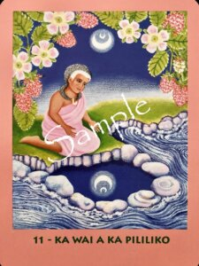 | 🔗 開く | KA WAI A KA PILILIKO カ ワイ ア カ ピリリコ | 答えを急ぐときほど、静かな時間を持ってみましょう。心が落ち着くと、水面に景色が映るように、本当に大切なことが見えてきます。思い込みや周囲の声を少し横に置き、自分の内側へ問いかけてください。そこには、今のあなたに必要な気づきが静かに映し出されています。 |
| 12 | 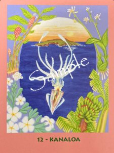 | 🔗 開く | KANALOA カナロア | これから先へ進むために、まず足元を見つめ直してみましょう。何を大切にし、どんな時に心が満たされるのか。その答えが、あなたの人生の土台になります。自分らしさを基盤に選択を重ねることで、新しい可能性は自然と広がっていくでしょう。 |
| 13 | 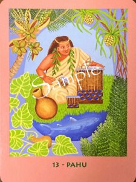 | 🔗 開く | PAHU パフ | 人生には、新しい扉が開く節目があります。出会いも別れも、そのすべてが次のステージへの準備なのかもしれません。変化を恐れるのではなく、これまでの日々へ感謝を伝えながら、新しい流れを迎え入れてください。その一歩が、未来への確かな響きとなります。 |
| 14 | 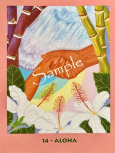 | 🔗 開く | ALOHA アロハ | 思いやりとは、自分を後回しにすることではありません。自分を大切にする心があるからこそ、他者にもやさしさを届けることができます。深呼吸をして心のバランスを整え、あなた自身にも愛を向けてください。その穏やかな心が、調和とあたたかなつながりを育んでいくでしょう。 |
| 15 | 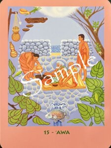 | 🔗 開く | ‘AWA アヴァ | 与えることは、見返りを求めるためではなく、心から湧き上がる思いやりの表れです。まずは自分自身の心を満たし、その豊かさを自然に分かち合ってみましょう。純粋な気持ちから生まれる行動は、人との信頼を育み、あなた自身の喜びにもつながっていきます。 |
| 16 | 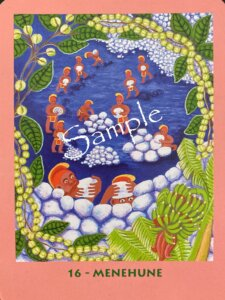 | 🔗 開く | MENEHUNE メネフネ | 大きな成果は、一夜にして生まれるものではありません。目立たない日々の積み重ねや、小さな努力の一つひとつが、やがて確かな形となって実を結びます。一人で抱え込まず、周りの力も素直に受け取りながら歩んでみましょう。今日まで続けてきた歩みは、あなたが思う以上に未来を支える大切な土台になっています。 |
| 17 | 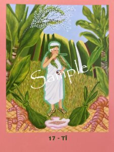 | 🔗 開く | TI ティ | 心や身体が重く感じるときは、無理に前へ進もうとしなくても大丈夫です。今は、本来のあなたへ戻るための時間なのかもしれません。不要になった思い込みや我慢を少しずつ手放し、深呼吸をして心を整えてみましょう。軽やかさを取り戻したとき、新しい流れは自然とあなたのもとへ訪れます。 |
| 18 | 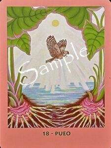 | 🔗 開く | PUEO プエオ | 偶然のように見える出来事や、ふと心に残る言葉には、大切な意味が込められていることがあります。今は頭で答えを探すよりも、自分の直感に静かに耳を傾けてみてください。あなたを見守る存在からの導きは、いつも必要なタイミングで届けられています。安心して、その小さなサインを受け取ってください。 |
| 19 | 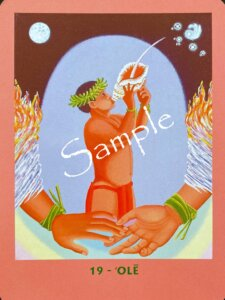 | 🔗 開く | ‘OLE オレ | あなたが心の中で語り続けている言葉は、未来を形づくる大切な物語です。過去の出来事に縛られるのではなく、これからどんな人生を歩みたいのかを、新しい言葉で描いてみましょう。あなた自身が物語の主人公であり、未来を書き換える力を持っています。希望を込めた一歩が、新しい人生のページを開いてくれるでしょう。 |
| 20 | 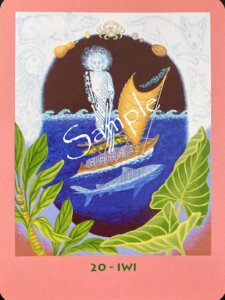 | 🔗 開く | IWI イヴィ | 本当の尊敬とは、誰かを敬うだけでなく、自分自身を大切な存在として認めることから始まります。これまで歩んできた道や積み重ねてきた経験にも、かけがえのない価値があります。まずは自分を信頼し、労わる心を育ててください。その自己尊重が、周囲との健やかな関係へと自然につながっていくでしょう。 |
| 21 | | 🔗 開く | LAMAKU ラマク | 勝利とは、誰かに勝つことではなく、自分が今やるべきことに意識を向け、一歩ずつ進み続けることです。迷いや不安に心を奪われるよりも、目の前にある小さな行動を積み重ねていきましょう。その積み重ねが、自信となり、大きな成果へと育っていきます。あなたの歩みは、確かな未来へ続いています。 |
| 22 | 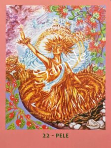 | 🔗 開く | PELE ペレ | 大きな変化は、ときに壊れることから始まります。古い価値観や役割を手放すことで、新しい可能性が芽吹く準備が整います。変化を恐れるのではなく、新しい自分へ生まれ変わる機会として受け止めてみましょう。その勇気が、人生に新たな創造をもたらしてくれるでしょう。 |
| 23 | 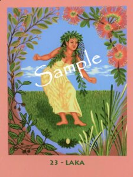 | 🔗 開く | LAKA ラカ | 心が静まる時間は、新しいひらめきと出会うための大切な時間です。慌ただしさから少し離れ、自然や静けさの中で心を整えてみましょう。無理に答えを探さなくても、本当に必要な導きは穏やかな心に訪れます。あなたの内側にある創造性が、次の一歩を優しく照らしてくれるでしょう。 |
| 24 | 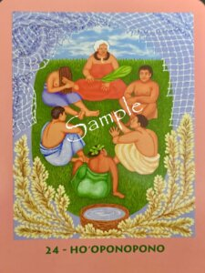 | 🔗 開く | HO‘OPONOPONO ホオポノポノ | すれ違いが生まれたときこそ、誠実な対話が心をつなぎ直します。相手を責めるのではなく、自分の気持ちを素直に伝え、相手の思いにも耳を傾けてみましょう。心に絡まった糸は、理解し合おうとする姿勢によって少しずつほどけていきます。調和は、思いやりのある一言から始まります。 |
| 25 | 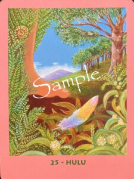 | 🔗 開く | HULU フル | 大きな幸運は、意外にも身近なところに隠れているものです。思い込みや先入観にとらわれず、足元にある小さなサインに目を向けてみましょう。気づいた瞬間に行動へ移すことで、願いは少しずつ現実へと近づいていきます。今日の小さな一歩が、未来の大きな実りにつながるでしょう。 |
| 26 | 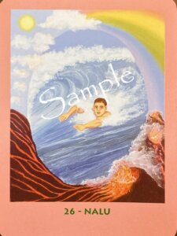 | 🔗 開く | NALU ナル | 波は絶えず形を変えますが、海そのものは静けさを失いません。心も同じように、感情に飲み込まれるのではなく、一歩離れて見つめることで本来の落ち着きを取り戻せます。深く呼吸をして、今この瞬間に意識を向けてみましょう。静かな心が、進むべき方向を優しく教えてくれるでしょう。 |
| 27 | 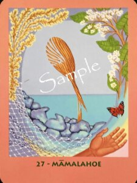 | 🔗 開く | MAMALAHOE ママラホエ | 人生で経験した痛みは、誰かを思いやる力へと変わっていきます。自分の苦しさを知っているからこそ、相手の気持ちにも寄り添うことができます。過去の経験を否定せず、大切な学びとして受け入れてみましょう。その優しさは、あなた自身と周りの人を守る大きな力となります。 |
| 28 | 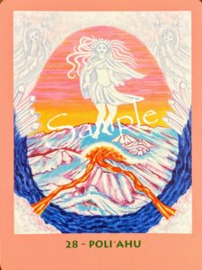 | 🔗 開く | POLI‘AHU ポリアフ | 感情が大きく揺れるときほど、慌てて答えを出す必要はありません。一度立ち止まり、静かな時間の中で心を整えることで、本当に大切なものが見えてきます。冷静さは感情を抑え込むことではなく、心を穏やかに保つ力です。静寂の中で得た気づきが、あなたをより良い未来へ導いてくれるでしょう。 |
| 29 | 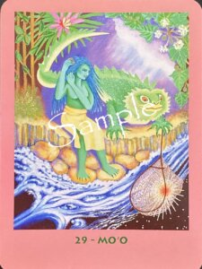 | 🔗 開く | MO‘O モオ | 私たちは思い込みや誘惑によって、本当に大切なものを見失うことがあります。目の前の出来事だけで判断せず、自分の心に問いかけながら本質を見極めてみましょう。焦らず冷静に向き合うことで、偽物ではなく本物を選ぶ力が育っていきます。その気づきが、あなたを安心できる未来へと導いてくれるでしょう。 |
| 30 | | 🔗 開く | PU‘OLO プオロ | 過去への執着や「こうあるべき」という思い込みは、知らず知らずのうちに心を重たくしてしまいます。今のあなたに必要なのは、不要になった荷物を手放し、本当に大切なものへ意識を向けることです。手放すことで失うのではなく、新しい幸せを迎えるためのスペースが生まれます。軽やかな心が、あなたらしい未来への扉を開いてくれるでしょう。 |
| 31 | 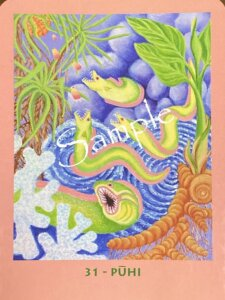 | 🔗 開く | PUHI プヒ | 現状が揺らぐ出来事は、新しい流れを生み出すための始まりでもあります。迷い続けるよりも、自分で選び、一歩を踏み出す勇気を持ってみましょう。完璧な準備を待つ必要はありません。行動を始めた瞬間から景色は変わり、あなたの可能性は大きく広がっていくでしょう。 |
| 32 | 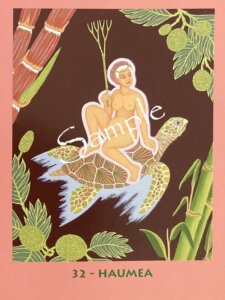 | 🔗 開く | HAUMEA ハウメア | 大地は、どんな種も静かに受け止め、成長を見守り続けます。あなたにも今、必要な力や学びはすでに与えられています。焦らず日々の小さな成長に目を向け、自分自身を認めてあげましょう。積み重ねた歩みは、やがて豊かな実りとなって人生を支えてくれます。 |
| 33 | 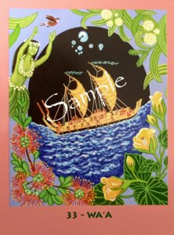 | 🔗 開く | WA‘A ヴァア | 人生という航海では、目的地だけでなく進む方向を見失わないことが大切です。自分が目指す未来を明確にし、ともに進む仲間や導きのサインを信頼してみましょう。一人では難しいことも、支え合うことで乗り越えられます。あなたの航海は、希望に満ちた未来へと続いています。 |
| 34 | 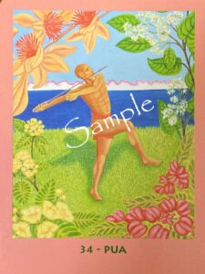 | 🔗 開く | PUA プア | 花が咲くためには、根を張り、芽を出し、成長する時間が必要です。あなたが積み重ねてきた努力も、今まさに花開こうとしています。迷いよりも希望を選び、自分の目標へ向かって一歩を踏み出してください。その勇気が、新しい可能性を大きく咲かせてくれるでしょう。 |
| 35 | | 🔗 開く | MAUI マウイ | 遊び心は、人生に新しい風を吹き込む大切な力です。失敗を恐れて立ち止まるよりも、「まずやってみよう」という軽やかな気持ちで一歩を踏み出してみましょう。完璧な準備を待たなくても、その経験は必ずあなたの成長につながります。挑戦する勇気が、新しい可能性への扉を開いてくれるでしょう。 |
| 36 | 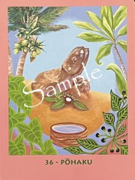 | 🔗 開く | POHAKU ポハク | 人とのご縁には、始まりもあれば終わりもあります。離れていく縁を無理につなぎ止めるのではなく、感謝を込めて見送り、新しく訪れるご縁を大切に育んでいきましょう。互いを認め合い、支え合える関係は、人生をより豊かにしてくれます。信頼を積み重ねることで、本当に必要な仲間と出会えるでしょう。 |
| 37 | 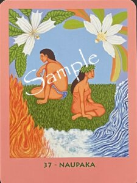 | 🔗 開く | NAUPAKA ナウパカ | 別れは、失うことだけを意味するものではありません。新しい未来へ進むために、役目を終えたものを手放す勇気が必要なときもあります。依存や執着から少しずつ離れ、本当に大切なものへ意識を向けてみましょう。その選択が、あなたを自分らしい人生へと導いてくれるでしょう。 |
| 38 | 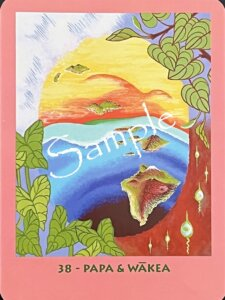 | 🔗 開く | PAPA＆WAKEA パパ＆ワケア | 思い通りにならない時間も、未来を創るための大切な過程です。苦労を無駄だと思わず、その経験から何を学べるのかに目を向けてみましょう。視点を少し広げることで、今まで見えなかった可能性が見えてきます。積み重ねた努力は、やがて新しい世界を創る大きな力となるでしょう。 |
| 39 | 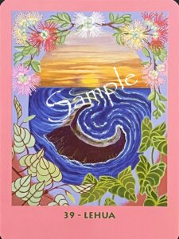 | 🔗 開く | LEHUA レフア | 人生には、新しい自分へ生まれ変わる節目が訪れます。変化を恐れて過去に留まるのではなく、今の自分に与えられた役割を受け入れてみましょう。通過儀礼のような経験は、あなたをより深く、より豊かな存在へと育ててくれます。勇気を持って進んだ先には、新しい世界が待っています。 ありがとうございます。いよいよ最後のカード群です。これまでと同じフォーマットでまとめます。 |
| 40 | 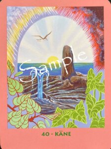 | 🔗 開く | KANE カネ | 新しい未来は、誰かが与えてくれるものではなく、あなた自身の選択によって創り出されていきます。「できない」という思い込みを手放し、自分の可能性を信じて一歩を踏み出してみましょう。小さな行動の積み重ねが、やがて大きな変化を生み出します。あなたの中にある創造の力が、望む未来への道を切り開いてくれるでしょう。 |
| 41 | 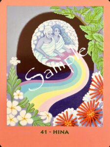 | 🔗 開く | HINA ヒナ | 心も人生も、日々の積み重ねによって育まれていきます。結果を急ぐのではなく、今の自分に必要な学びや休息を大切にしてください。自分自身を優しく養うことで、内側から新しい力が満ちてきます。その豊かさは、やがて周りの人へも自然と広がっていくでしょう。 |
| 42 | 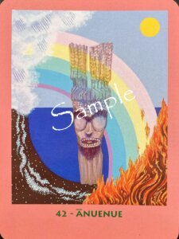 | 🔗 開く | ANUENUE アヌエヌエ | 変化は、今までの自分を否定することではありません。経験を受け入れ、新しい価値観を育てることで、本来のあなたらしさが輝き始めます。恐れよりも希望を選び、小さな一歩を積み重ねていきましょう。変容の先には、これまで想像できなかった新しい景色が待っています。 |
| 43 | | 🔗 開く | LEI レイ | 本当に大切なものは、いつも身近なところにあります。人とのご縁、支えてくれる存在、そして自分自身の命もまた、かけがえのない贈り物です。当たり前と思わず、感謝の気持ちを持って日々を過ごしてみましょう。その想いが、人生をより豊かで温かなものへと育ててくれるでしょう。 |
| 44A | 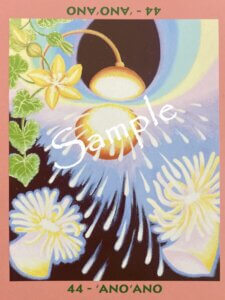 | 🔗 開く | ’ANO’ANO アノアノ ヒョウタンが下向き | すべての始まりには、小さな種があります。今抱いている想いや決意も、未来へ育っていく大切な種です。焦らず丁寧に育み、自分が信じる道を歩み続けてください。その意思はやがて大きく根を張り、豊かな実りとなって人生を支えてくれるでしょう。 |
| 44B | 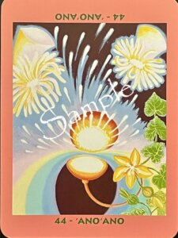 | 🔗 開く | ’ANO’ANO アノアノ ヒョウタンが上向き | 育ててきた種は、やがて花を咲かせ、新しい命へとつながっていきます。あなたが積み重ねてきた経験や想いは、自分だけでなく周りの人にも希望を届ける力になります。受け取った恵みに感謝し、その豊かさを次の未来へつないでいきましょう。その循環が、新たな可能性を育み続けてくれるでしょう。 |